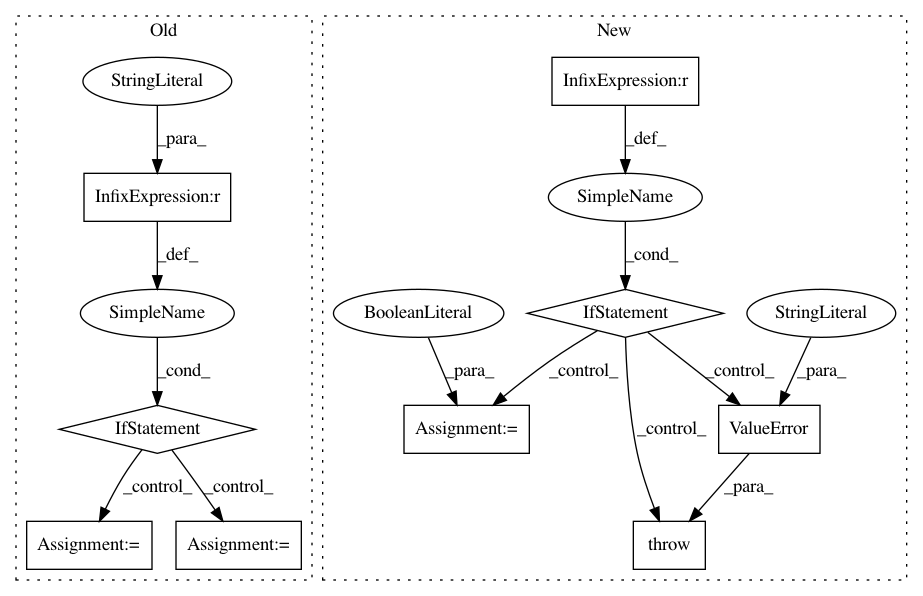

3f0bd0264210e859fe4de2715e321cbaed327c85,dipy/denoise/localpca.py,,localpca,#Any#Any#Any#Any#Any#Any#Any#,4
Before Change
// If mask is not specified, use the whole volume
mask = np.ones_like(arr, dtype=bool)[..., 0]
if pca_method == "svd":
// Try to get the SVD through direct API to lapack:
try:
from scipy.linalg.lapack import dgesvd as svd
svd_args = [1, 0]
// If you have an older version of scipy, we fall back
// on the standard scipy SVD API:
except ImportError:
from scipy.linalg import svd
svd_args = [False]
else:
from scipy.linalg import eigh
if out_dtype is None:
out_dtype = arr.dtype
// We retain float64 precision, iff the input is in this precision:
After Change
if pca_method.lower() == "svd":
is_svd = True
elif pca_method.lower() == "eig":
is_svd = False
else:
raise ValueError("pca_method should be either "eig" or "svd"")
patch_size = 2 * patch_radius + 1
if patch_size ** 3 < arr.shape[-1]:
In pattern: SUPERPATTERN
Frequency: 3
Non-data size: 9
Instances
Project Name: nipy/dipy
Commit Name: 3f0bd0264210e859fe4de2715e321cbaed327c85
Time: 2017-07-28
Author: sheybani.saber@gmail.com
File Name: dipy/denoise/localpca.py
Class Name:
Method Name: localpca
Project Name: masa-su/pixyz
Commit Name: b63bd3184d5708a11c522e6e2a11ad79834422d5
Time: 2019-03-14
Author: masa@weblab.t.u-tokyo.ac.jp
File Name: pixyz/losses/adversarial_loss.py
Class Name: AdversarialLoss
Method Name: __init__
Project Name: nipy/dipy
Commit Name: 71b50613bb182a263e799be300e187b840fc1572
Time: 2017-07-21
Author: sheybani.saber@gmail.com
File Name: dipy/denoise/localpca.py
Class Name:
Method Name: localpca